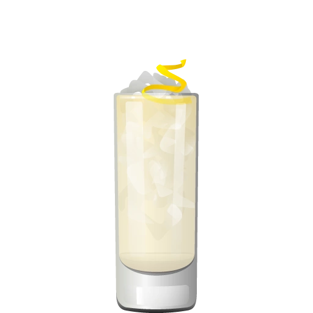
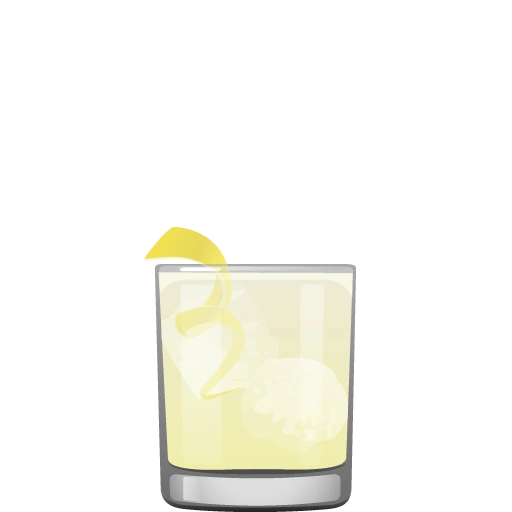

The French 75 emerged during the First World War and was named after the powerful French 75-millimeter field gun. Its precise birthplace is debated, but the drink became closely associated with Parisian bars and the era's taste for lively combinations of gin, citrus, sugar, and Champagne. Early printed versions varied, but the now-classic recipe took shape as a bright, elegant cocktail whose sparkling finish concealed a surprisingly forceful punch.
| 1 oz | London dry gin |
| ½ oz | Fresh lemon juice |
| ½ oz | Simple syrup |
| 3 oz | Brut Champagne or dry sparkling wine |
| 1 | Lemon twist for garnish |
Shake the gin, lemon juice, and simple syrup with ice. Strain into a chilled flute or coupe, top slowly with Champagne, and garnish with a long lemon twist.
Pour the sparkling wine gently to preserve the bubbles
The French 75 is most often served in a Champagne flute, whose tall, narrow shape helps preserve its effervescence and emphasizes the drink's refined character. A coupe offers a more dramatic, vintage presentation and fits the cocktail's Parisian reputation, though its broad bowl allows bubbles to fade more quickly. Whichever glass you choose, chilling it first keeps the drink crisp and lively.
The French 75 helped establish sparkling wine as more than a celebratory topper: it became a structural ingredient capable of lengthening a cocktail while adding acidity, texture, and aroma. Its combination of spirit, citrus, sweetener, and bubbles now serves as a template for countless modern drinks. Bartenders can change the base spirit, introduce fruit or herbs, or trade Champagne for another dry sparkling wine while preserving the original's elegant balance.
French 76Replace the gin with vodka for a softer, cleaner variation.

Japanese 75

Italian 75| Quester | Altitude 15 | Shiny Prize | Row | Cheeky Martini | Filibuster | The Bus Stop | Capitol Tavern | Average |
|---|---|---|---|---|---|---|---|---|
| Eric | 6.00 | 8.40 | 6.90 | 7.90 | 8.00 | — | — | 7.44 |
| Collin | 6.50 | 8.50 | 8.50 | 7.50 | 8.00 | 7.00 | 7.50 | 7.64 |
| Christ | 5.75 | 7.80 | 7.90 | 8.20 | 8.20 | 7.50 | 6.50 | 7.41 |
| Kyle | 5.00 | 9.00 | 7.50 | 7.50 | 7.50 | 7.75 | 7.00 | 7.32 |
| Timbo | — | 8.80 | 8.10 | 7.80 | 8.10 | 7.60 | 8.00 | 8.07 |
| Kriston | — | 8.50 | 7.50 | 8.00 | 6.50 | 7.00 | 6.75 | 7.38 |
| Steph | — | 7.00 | 7.00 | 7.50 | 7.25 | 6.75 | 6.50 | 7.00 |
| Kylea | — | — | 7.70 | 8.20 | 8.30 | 7.60 | — | 7.95 |
| Karen | — | — | 7.30 | 7.90 | 8.20 | 7.10 | — | 7.63 |
| Jimbo | — | — | — | 7.00 | 7.50 | 6.00 | 6.23 | 6.68 |
| Vincent | — | — | — | — | — | 7.00 | — | 7.00 |
| Average | 5.81 | 8.29 | 7.60 | 7.75 | 7.76 | 7.13 | 6.93 | 7.45 |